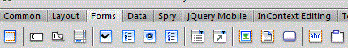
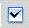
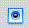
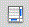
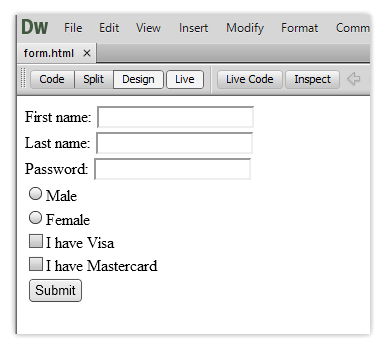

Inserting Buttons & Creating Text Areas

Inserting forms is a pretty easy task, but is a necessity when buildig a website. Several forms are avalable under the Forms tab. Depending on the information you want back from your viewer, there is an array of forms available under the Forms Tab. Here are some of the forms available.
|  | Checkbox- allows your user to choose one of two options |
| Checkbox Group- allows you to give a group of checkboxes | |
|  | Radio Button- allows your user to choose one option |
| Radio Group-allows your user to choose one option from a large group | |
| Button- Allows you to make your own button | |
|  | Textarea- For large areas of input that requires a large ammout of text. |
| Text Field-allows for short areas of text like names and passwords. |

Now your viewer can send information to your server.